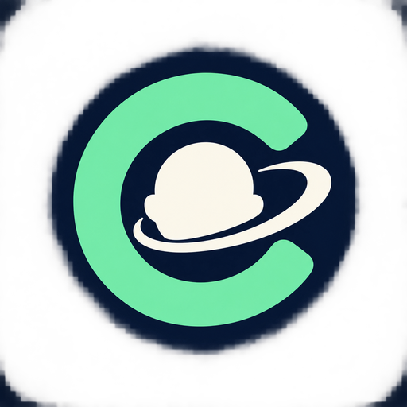

Reduce solicitudes de redes publicitarias conocidas.
Usado cuando escribes una consulta en la barra.
Elige una interfaz cómoda para ti.
Vuelve a abrir las pestañas normales al iniciar Calvito.
Muestra tus sitios guardados bajo la barra de direcciones.
Haz que Calvito se sienta tuyo.
Desactiva las animaciones de la interfaz.
Importa o exporta un archivo JSON de Calvito.
Consulta GitHub al iniciar y cada cuatro horas.
Consultando estado…
Los datos de navegación permanecen en este equipo. La navegación privada no oculta tu actividad a los sitios ni a tu proveedor de internet. Los archivos descargados se conservan.